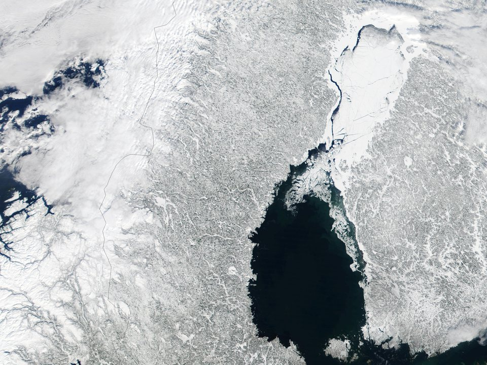
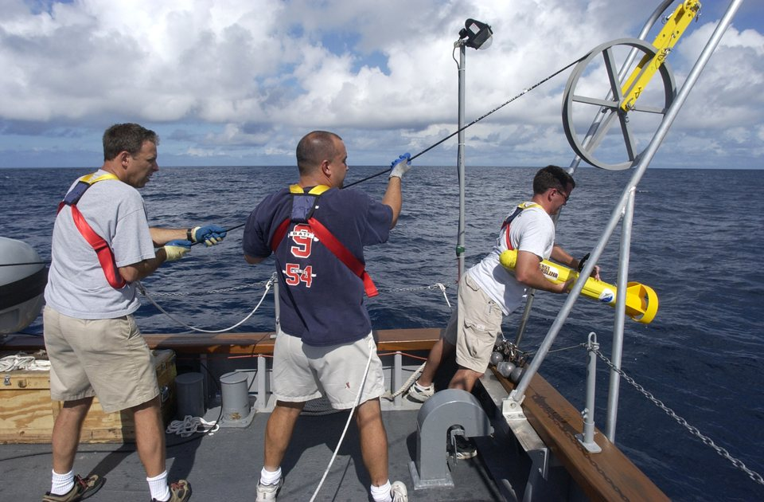
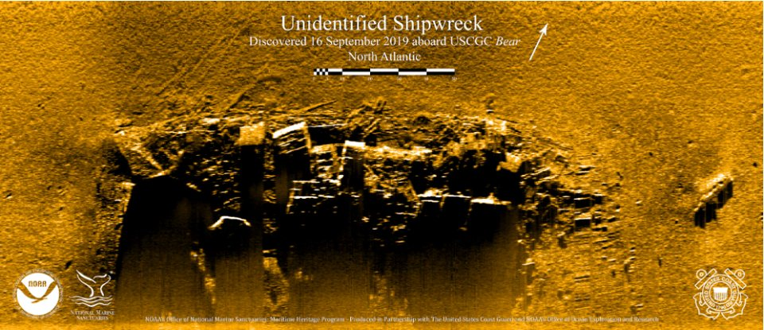
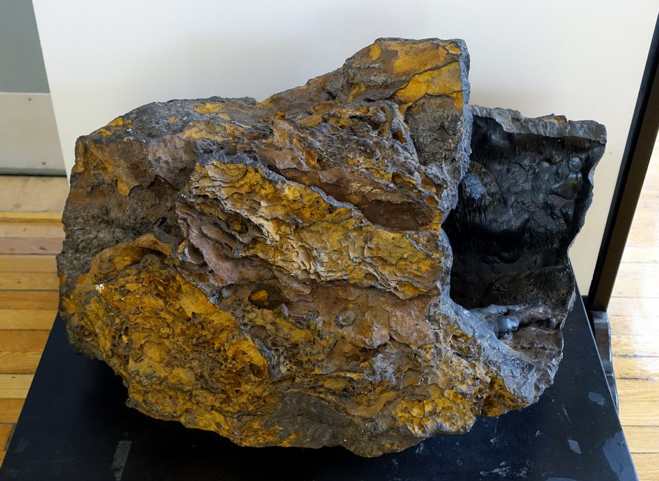
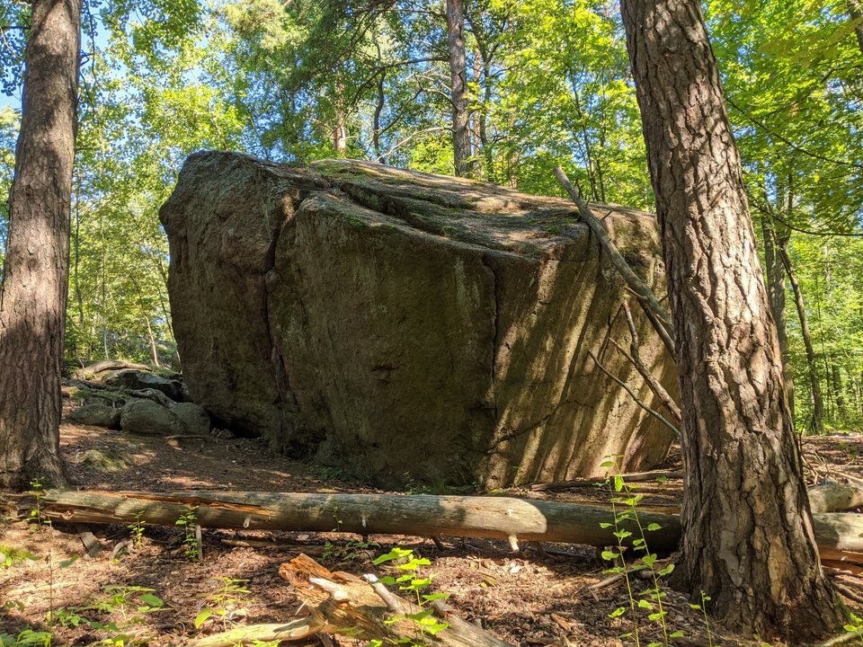

A anomalia do mar Báltico — o eco e a leitura do eco
Em junho de 2011, uma equipe sueca que procurava naufrágios passou um sonar sobre o fundo do golfo de Bótnia e voltou com uma mancha redonda de sessenta metros. Ninguém mais viu a imagem crua, a posição nunca foi divulgada, e o que veio do fundo foram pedras. Quinze anos depois, em outubro de 2026, a mancha continua rendendo mais manchete do que dado.
- Onde
- Golfo de Bótnia, entre Suécia e Finlândia
- Posição exata
- não divulgada
- Registro
- sonar lateral, junho de 2011
- Profundidade
- ≈ 85 – 91 m
- Diâmetro
- ≈ 60 m
- Publicação científica
- nenhuma até outubro de 2026
O golfo de Bótnia é o braço mais ao norte do mar Báltico, uma bacia comprida e rasa espremida entre a costa sueca e a finlandesa, de água quase doce, que congela no inverno. Por baixo dela há rocha antiga do escudo escandinavo, coberta por aquilo que o gelo deixou ao recuar: cascalho, argila, morenas e blocos soltos do tamanho de casas. É um fundo cheio de formas estranhas, e quase todas têm o mesmo autor.
Em junho de 2011, um barco da Ocean X Team percorria esse fundo com um sonar de varredura lateral. A equipe, liderada pelos mergulhadores Peter Lindberg e Dennis Åsberg, vivia de achar naufrágios — Lindberg era conhecido na Suécia por ter localizado, em 1997, os destroços do Jönköping, uma escuna afundada em 1916 com garrafas de champanhe que voltaram à superfície bebíveis. Naquele verão o alvo era outro barco com carga valiosa. No dia 19, a tela do sonar mostrou uma coisa que não parecia navio nenhum.

01O que o sonar mostrou
A imagem que a Ocean X divulgou naquele verão mostra, sobre um fundo granulado, uma forma quase circular de cerca de sessenta metros, com um contorno claro de um lado e uma sombra do outro. Saindo dela, uma faixa longa e reta que a equipe chamou de "rastro", como se algo tivesse deslizado pelo fundo antes de parar. A uns duzentos metros, disseram, o mesmo sonar tinha pegado uma segunda forma — mas essa segunda imagem nunca foi divulgada, porque, nas palavras do próprio Lindberg, tinha saído borrada demais.
Por meses a história circulou em fóruns e sites de mistério, mas quem a transformou em notícia mundial foram os tabloides, em 2012. Algumas reproduções redesenharam o contorno da mancha, realçando bordas e simetrias que a imagem original não tem, e a comparação com uma nave de ficção científica fez o resto. A partir dali, a forma passou a ser descrita com mais detalhe do que o sonar jamais registrou.
02Como se lê uma imagem de sonar lateral
O sonar de varredura lateral é um cilindro rebocado por um cabo, alguns metros acima do fundo. Ele dispara pulsos de som para os dois lados e registra o eco que volta. Superfície dura e inclinada para o aparelho devolve muito som e aparece clara; o que fica atrás de um relevo não recebe som nenhum e aparece escuro — é a "sombra acústica", que dá à imagem a aparência de uma fotografia com luz rasante. Só que não é uma fotografia: é um gráfico do tempo de retorno do eco, desenhado linha a linha enquanto o barco avança.

Por isso a imagem distorce de maneiras previsíveis. Se o peixe balança, sobe ou gira, linhas retas aparecem tortas e formas redondas viram ovais. Se a velocidade do barco muda, a imagem estica ou encolhe no sentido do percurso. E se os dois canais do aparelho, o da esquerda e o da direita, interferem um no outro, um alvo de um lado deixa um "fantasma" do outro. Faixas retas no fundo podem ser ondulações de sedimento, camadas de rocha exposta — ou simplesmente defeitos de processamento.
Foi esse o ponto do engenheiro Hanumant Singh, então no Instituto Oceanográfico de Woods Hole, nos Estados Unidos, que examinou a imagem a pedido da imprensa. Ele apontou na imagem da Ocean X sinais de um reflexo espelhado da forma circular no canal oposto — interferência entre canais, típica de aparelho mal ligado — e lembrou que o sonar lateral funciona bem para destroços altos, com sombra nítida, e mal para relevos baixos e arredondados. Sua conclusão foi que, com aquelas distorções, a imagem servia muito pouco para dizer o que estava no fundo. Charles Paull, do Instituto de Pesquisa do Aquário de Monterey, achou a história curiosa e divertida, mas sem substância: nada na imagem pedia mais que uma formação natural.

03As voltas ao local: o que os mergulhadores descreveram
Em junho de 2012, a equipe passou cerca de doze dias sobre o local, com sonar, câmera em veículo operado remotamente e mergulhadores. As fotos e vídeos dessa campanha mostram um fundo escuro, de visibilidade curta, com superfícies de pedra, rachaduras preenchidas por material negro, um conjunto de pedras arredondadas que a equipe comparou a uma lareira e degraus que ela descreveu como "escadas". A forma, segundo eles, se ergue alguns metros do fundo; o número varia entre as entrevistas, de três a quatro metros até um suposto pilar de oito.
Dois relatos da mesma temporada pesaram mais na imprensa do que as fotografias. Um mergulhador da equipe contou que os aparelhos elétricos a bordo, incluindo o telefone por satélite, deixavam de funcionar quando o barco estava sobre a forma e voltavam a uns duzentos metros dali. E o próprio Lindberg, ao fim da campanha, disse que a coisa lembrava uma pedra gigante, do tipo que mergulhadores veem em portos — para em seguida brincar que ninguém disse que alienígenas precisassem usar metal.
Nenhum desses relatos foi medido de forma que outra pessoa pudesse conferir: não há registro publicado das falhas, com hora, aparelho e posição, nem levantamento topográfico do objeto com escala. O que a campanha de 2012 produziu de verificável foram pedras.
04O que as pedras disseram
Os mergulhadores trouxeram fragmentos do local, e eles passaram por mais de um par de mãos. O geólogo Volker Brüchert, professor associado da Universidade de Estocolmo, examinou as amostras que a equipe lhe entregou e, em agosto de 2012, deu o resumo à imprensa: a maior parte era granito, gnaisse e arenito — exatamente o repertório de uma bacia que foi coberta por geleiras. Havia também um pedaço solto de rocha basáltica, de origem vulcânica. Para Brüchert, nada disso era estranho: num fundo em que o gelo arrastou rochas de toda a Escandinávia, um bloco de basalto fora do lugar é o esperado, e a feição e as pedras provavelmente se formaram em processos glaciais e pós-glaciais.
Outra parte do material seguiu para Israel. Segundo o que a equipe e a imprensa sueca divulgaram, Steve Weiner, então diretor do centro de ciência arqueológica do Instituto Weizmann, analisou uma lasca por espectroscopia de infravermelho e identificou limonita e goethita — óxidos e hidróxidos de ferro, o mesmo material da ferrugem. Na versão que chegou aos jornais, Weiner teria achado estranho encontrar esses minerais numa estrutura daquelas, que lembrariam mais uma construção moderna. Não localizamos relatório técnico assinado por ele; o que circula é a declaração repassada.
Foi essa declaração que virou, em sites de mistério, a frase de que o objeto continha "metais que a natureza não produz". A frase não se sustenta nem como resumo. Limonita e goethita não são metais, e são minerais comuníssimos — a limonita é a "ferrugem de pântano" que os povos nórdicos usaram como minério de ferro por séculos. O geólogo Fredrik Klingberg, do Serviço Geológico da Suécia, e o geólogo marinho Martin Jakobsson, da Universidade de Estocolmo, responderam que a composição lembrava a de nódulos e crostas de ferro que se formam naturalmente no fundo do mar, e que limonita e goethita precipitam ali pela química da água, sem nenhuma intervenção humana. Jakobsson leu o material como arenito.

05O golfo que o gelo esculpiu
Até por volta de dez mil anos atrás, o golfo de Bótnia estava debaixo do manto de gelo escandinavo, com mais de dois quilômetros de espessura no centro. Ao avançar e recuar, esse gelo raspou a rocha de base, carregou pedaços dela por centenas de quilômetros e os largou onde derreteu. É por isso que o fundo do golfo está semeado de blocos erráticos, cordões de morena, colinas alongadas chamadas drumlins e campos de matacões — formas que, vistas de cima, podem ser surpreendentemente regulares.

Os geólogos que comentaram o caso não apostaram todos na mesma forma. Brüchert falou em depósito glacial. O geomorfólogo finlandês Jarmo Korteniemi lembrou que o "rastro" retilíneo tem cara de drumlin ou de cordão de morena, comuns na região. Também se lembrou que montes arredondados no fundo se formam onde fluidos e gases escapam do sedimento e cimentam a rocha em volta. Na imprensa americana se falou em basalto em almofada, a forma de lava que esfria debaixo da água — leitura que nenhuma amostra confirmou, já que o único basalto recolhido era uma pedra solta. O que essas leituras têm em comum é que nenhuma precisa de nada além do que já se sabe sobre o fundo do Báltico.
Há uma consequência que vale guardar. Um bloco errático ou um monte de morena não nasce da rocha de base: ele foi posto sobre o sedimento. Isso vai importar mais adiante.
06Descoberto ontem: a expedição de 2025 e o que ainda falta
Depois de anos sem campanha nova, a anomalia voltou à pauta em fevereiro de 2025, quando Dennis Åsberg deu entrevista ao jornalista australiano Ross Coulthart, da rede americana NewsNation, conhecido pela cobertura do tema dos fenômenos aéreos não identificados. Åsberg descreveu um objeto redondo "separado do fundo", com ângulos, buracos e um rastro de cerca de mil e quinhentos metros — quase quatro vezes o comprimento citado em 2012.
Em julho de 2025, a Society for UAP Studies, uma associação americana dedicada ao estudo desses fenômenos, anunciou apoio a uma expedição financiada por doação direcionada. Ela não liderava a missão; dizia cuidar de protocolo, assessoria e comunicação. Na primeira fase, segundo os comunicados, a equipe usou sonar multifeixe, perfilador de subfundo, modelagem tridimensional por fotogrametria e sensores ambientais, com participação de uma empresa de robótica, de um grupo francês e da astrônoma Beatriz Villarroel, de Estocolmo, conhecida por buscar objetos artificiais em placas fotográficas antigas do céu. Åsberg disse ter recebido dados que o deixaram "sem palavras" e anunciou um artigo com Villarroel, sem data.
O que veio a público desde então são declarações e recortes. O perfilador de subfundo, segundo a equipe, mostra que o objeto repousa sobre uma camada de sedimento e não brota da rocha de base. Em entrevistas e reportagens de novembro de 2025 apareceram também a descrição de "paredes retas" e "corredores a noventa graus", de saídas periódicas de água turva por um buraco e de uma queda local de temperatura. Em 9 de janeiro de 2026, Åsberg publicou numa rede social duas imagens de sonar multifeixe da campanha de 2025, dizendo que eram uma parte pequena dos dados, que a investigação seguia e que não divulgaria mais naquele momento. A equipe falou numa nova campanha no verão de 2026 e num relatório científico depois dela.
Até a data desta revisão, não localizamos o artigo, o relatório público prometido nem os dados brutos. Isso não prova nada contra a equipe — análise leva tempo —, mas define o que se pode afirmar hoje: as novidades de 2025 são descrições de quem fez a expedição, não resultados que outra pessoa possa conferir. E a principal delas, a de que o objeto está apoiado sobre sedimento, é exatamente o que se espera de um bloco ou de um depósito trazido pelo gelo. Ela descarta uma saliência da rocha de base; não descarta a geologia.
07O sonar e a bilheteria
Desde o início, a anomalia foi também um produto. A Ocean X é uma empresa de mergulhadores que precisa financiar expedições caras, e não escondeu isso: falou em documentário, em patrocínio e, em 2012, em levar turistas para ver o objeto em submarino. A posição foi mantida em segredo, o que é compreensível para proteger um sítio, mas que também impede qualquer grupo independente de passar um sonar por cima e comparar.
O cientista planetário Jonathon Hill, da Universidade Estadual do Arizona, especialista em processamento de imagens, foi direto em 2012: a imagem tinha pouca resolução, pouco detalhe e muitos artefatos de processamento, e para uma empresa que planeja passeios pagos até o objeto, confirmar que é uma pedra comum seria ruim para o negócio. É uma observação sobre incentivo, não uma acusação de fraude — e incentivo vale para os dois lados: quem desmonta mistério também vende audiência. O que resolve é dado aberto, e é o que falta desde 2011.
O próprio Lindberg, vale registrar, nunca foi o mais enfático. Ao longo dos anos ele falou em formação natural, em meteorito, em vulcão, em algo anterior à última glaciação e, com humor, em nave de pedra. A versão "disco voador afundado há 140 mil anos", que aparece em vídeos e sites, não vem de nenhuma datação: nenhuma amostra do local foi datada em publicação alguma.
08As leituras, da mais sóbria à mais improvável
Uma feição glacial: bloco, morena ou depósito deixado pelo gelo
É a leitura que as amostras sustentam. Granito, gnaisse, arenito e um basalto solto são o conteúdo típico do que o gelo escandinavo arrastou; a crosta de óxido de ferro é o que o fundo do Báltico deposita sobre pedra parada. A forma regular não é argumento contra: blocos erráticos e drumlins podem ter faces planas e contornos limpos. E o único dado de 2025 já descrito, o objeto pousado sobre sedimento, é compatível com ela. Falta o que faltaria a qualquer leitura: levantamento publicado.
Rocha exposta ou monte formado por escape de fluidos
Um afloramento da rocha de base, ou um monte cimentado onde gás e água saem do sedimento, explicaria uma forma arredondada e a crosta mineral. A primeira hipótese perde força se o perfilador de 2025 estiver certo sobre o objeto estar apoiado em sedimento. A segunda conversaria com o relato de água turva saindo por um buraco — se esse relato vier acompanhado de medida.
Obra humana: armadilha antissubmarino, torre de navio, carga despejada
Foram propostas uma base de armadilha alemã para submarinos da Segunda Guerra, uma torre de canhão caída de um navio e um despejo de resíduos. Todas esbarram no mesmo ponto: o que veio do fundo foi rocha natural, sem concreto, aço ou madeira trabalhada, e sessenta metros de diâmetro é muito maior que qualquer torre de navio. Naufrágio comum, o que a equipe procurava, também não combina com o material recolhido.
Nave extraterrestre, Atlântida ou civilização anterior ao gelo
Depende de ler a imagem de sonar como fotografia, as falhas de aparelho como efeito do objeto e a limonita como "metal que a natureza não produz". Nenhuma das três coisas se sustenta: a imagem é ruidosa, as falhas não foram registradas, e a limonita é um dos minerais mais comuns do norte da Europa. Não há uma única medida publicada que peça explicação fora da geologia.
Desmontar essa leitura não é zombar de quem se encantou com ela. A mancha é estranha de verdade, o fundo do Báltico é pouco visto, e a pergunta "o que é aquilo?" é a pergunta certa. A resposta é que se responde com sonar calibrado e amostra analisada — e que, até agora, as amostras analisadas disseram pedra.
09Cronologia
- até ≈ 10 mil anos atrásO manto de gelo escandinavo cobre o golfo de Bótnia; ao recuar, deixa morenas, drumlins e blocos erráticos no fundo.
- 1997Peter Lindberg participa da localização do naufrágio do Jönköping, com sua carga de champanhe de 1907.
- 11 de junho de 2011A Ocean X sai para uma campanha de busca de naufrágios no golfo de Bótnia.
- 19 de junho de 2011O sonar lateral registra a forma circular de cerca de 60 metros, a cerca de 85 a 91 metros de profundidade.
- verão de 2011A imagem é divulgada.
- fevereiro de 2012A equipe anuncia uma segunda forma a uns 200 metros, sem divulgar a imagem dela. Hanumant Singh, de Woods Hole, aponta na imagem de 2011 interferência entre canais e outras distorções.
- junho de 2012Campanha de cerca de doze dias com câmera remota e mergulhadores. Relatos de "escadas", rachaduras com material negro e falhas de equipamento. Tabloides levam o caso ao mundo.
- agosto de 2012Volker Brüchert, da Universidade de Estocolmo, descreve as amostras: granito, gnaisse, arenito e um basalto solto. A análise de Israel, atribuída a Steve Weiner, identifica limonita e goethita; Klingberg e Jakobsson as leem como crosta natural.
- fevereiro de 2025Dennis Åsberg volta a falar do caso na NewsNation, com Ross Coulthart.
- julho de 2025A Society for UAP Studies anuncia apoio a uma expedição com sonar multifeixe e perfilador de subfundo, com participação de Beatriz Villarroel.
- novembro de 2025Em entrevistas, Åsberg descreve "paredes retas", objeto apoiado em sedimento, saída de água turva e queda de temperatura.
- 9 de janeiro de 2026Åsberg publica duas imagens de sonar multifeixe de 2025 e anuncia nova campanha e um relatório científico.
- outubro de 2026Nenhum artigo, relatório ou conjunto de dados públicos localizado.
10O que continua em aberto
O que exatamente está lá embaixo. A leitura glacial é a mais bem sustentada, mas é uma explicação por classe — "é o tipo de coisa que o gelo deixa" —, não uma descrição publicada daquele objeto. Um mapa multifeixe calibrado, com escala e posição, encerraria boa parte da discussão em qualquer direção.
O que a campanha de 2025 mediu. Perfil de subfundo, temperatura, turbidez e as supostas falhas de equipamento são, todos, coisas que se registram com número. Enquanto os dados não forem publicados, não é possível saber se são anomalias ou ruído.
A segunda forma. Anunciada em 2012, nunca mostrada. Se existe e é parecida com a primeira, isso reforça a leitura de um campo de feições glaciais — que raramente aparecem sozinhas.
Por que a posição continua secreta. Há razões honestas para proteger um sítio, e o Báltico tem naufrágios saqueados demais. Mas, quinze anos depois, em outubro de 2026, o segredo é o principal obstáculo para que geólogos independentes façam o que a equipe pede que se faça: olhar com cuidado.
11Fontes consultadas
Este dossiê é texto autoral. As fontes abaixo foram consultadas para apuração de datas, medidas e atribuições; nenhuma foi reproduzida.
- Verbetes enciclopédicos consolidados sobre a anomalia, em inglês e em sueco — datas da campanha de 2011, medidas, propostas de explicação e referências.
- LiveScience / NBC News — reportagens de 2011 e 1º de fevereiro de 2012 com a análise de Hanumant Singh (Woods Hole) sobre o sonar e o anúncio da segunda forma.
- LiveScience / NBC News — reportagem de 29 de junho de 2012 com os relatos de falha de equipamento, os planos de passeio em submarino e os comentários de Jonathon Hill (Universidade Estadual do Arizona).
- LiveScience / NBC News — 'Mysterious' Baltic Sea Object Is a Glacial Deposit, 30 de agosto de 2012, com as declarações de Volker Brüchert (Universidade de Estocolmo) sobre as amostras.
- Imprensa sueca e repercussões de 2012 sobre a análise atribuída a Steve Weiner (Instituto Weizmann) e as respostas de Fredrik Klingberg (Serviço Geológico da Suécia) e Martin Jakobsson (Universidade de Estocolmo).
- Fox News / agências — balanço da campanha de junho de 2012 e declarações de Peter Lindberg.
- NewsNation — reportagem e podcast Reality Check, de Ross Coulthart, com Dennis Åsberg, fevereiro de 2025.
- Society for UAP Studies — comunicado sobre o apoio à expedição ao Báltico, julho de 2025; reportagens de julho e novembro de 2025 sobre a campanha e as declarações de Åsberg.
- Dennis Åsberg — publicação com duas imagens de sonar multifeixe da campanha de 2025, 9 de janeiro de 2026.
- Literatura geral sobre a deglaciação da Fennoscândia e sobre formas glaciais submarinas do golfo de Bótnia (morenas, drumlins, blocos erráticos) e sobre concreções de ferro e manganês no fundo do Báltico.